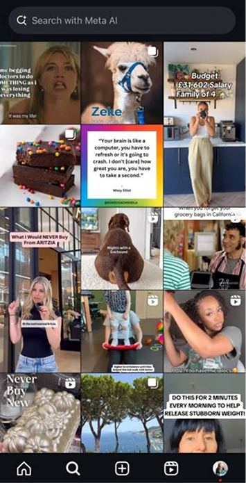
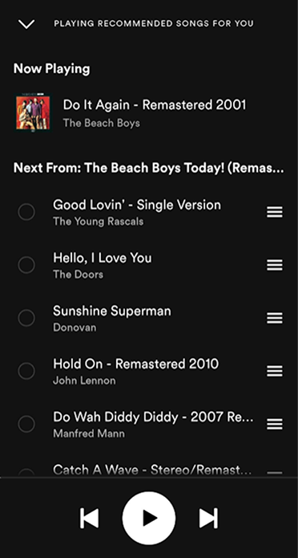
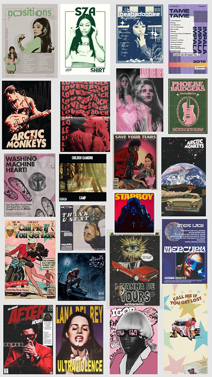

Cenário
Mecanismos de inovação geram de forma autónoma conteúdo cultural de tendências (moda e música), enquanto dados de envolvimento de utilizadores são monetizados para fomentar novas criações, gerando assim produtos culturais que evoluem organicamente com o gosto do público.
Brainstorming inicial
- As tendências são geradas baseadas nos gostos do público;
- Algoritmo;
- Nada é original, tudo é inspirado em algo que já existe e que os consumidores aderiram;
- Conteúdo cultural: moda, beleza, música, decoração, alimentação, fitness;
- Ciclo infinito;
- Dados de envolvimento: gostos, partilhas, comentários, tempo de visualização, nas redes sociais, por outro lado também podem ser recolhidos estes dados em espaços físicos de partilha de tendências, por exemplo em shoppings: quanto tempo uma pessoa passa em certas lojas, a olhar para um produto bem como dados estatísticos de cada loja: os produtos mais populares;
- Dados recolhidos são monetizados para gerar mais produtos, mais tendências;
- User engagement é algo positivo que acontece com sistemas: o tempo que os users passam num website, as vezes que clicam num link, as partilhas que fazem. Todos estes dados são os positivos, apenas são negativos se forem baixos.


